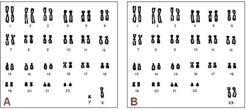
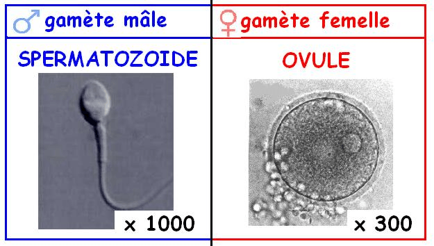
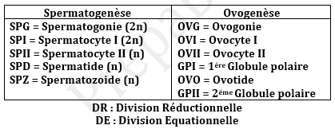
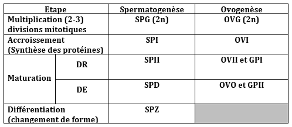
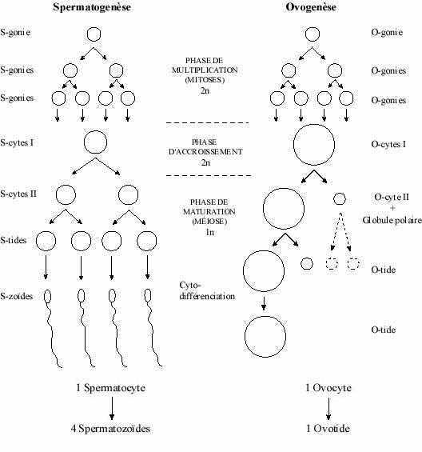
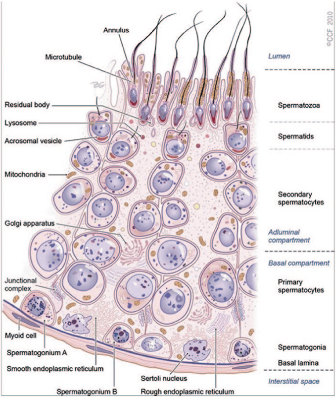
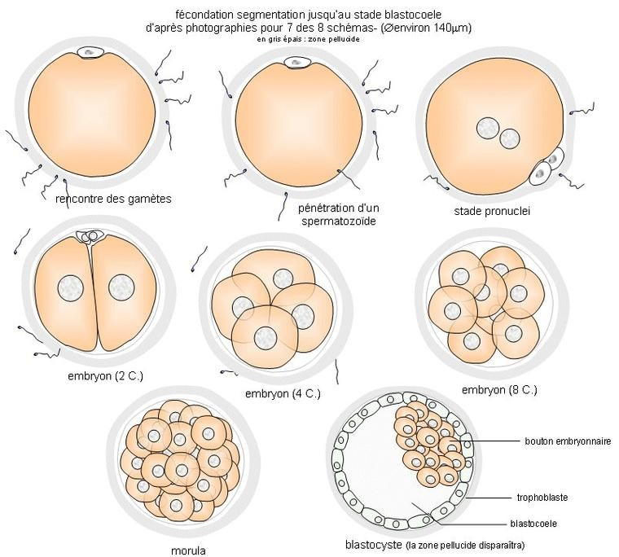
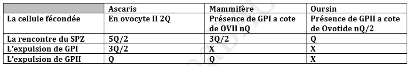
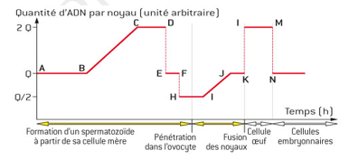
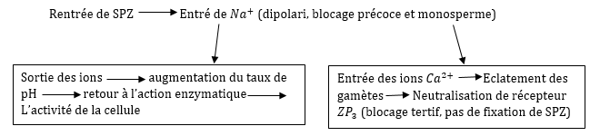

Rappel
Le caryotype
Le caryotype : est l’ensemble des chromosomes contenu dans le noyau d’une cellule après avoir était classé.

Les chromosomes sont divisés en deux sortent :
+ les chromosomes somatiques (les autosomes) : chaque paires autosomal est composé de deux homologues identiques.
+ les chromosomes sexuels (les gonosomes) : le caryotype contient une seule paire gonosomale chez les mammifères et les drosophiles, les gonosomes sont identiques chez la femme XX et diffèrent chez l’homme XY.
NB : Les nombres de chromosomes contenant pour chaque espèce chez l’homme :
Chez le male 44A + XY
Chez la femelle 44A + XX
+ les chromosomes sont sous forme des paires homologues la formule chromatique 2n = 8 (6A + XY)
+ les chromosomes sont fissurés et la quantité correspondant d’ADN est de 2Q
+ les gonosomes sont différents XY il s’agit d’un sexe masculin XX d’un sexe féminin
+ les caryotypes ne présentent aucune anomalie.
2 - Les Gamètes et Gamétogenèses :
Les gamètes sont des cellules sexuelles (germinale = reproductrice) haploïde n capable de fusionné pour donner une cellule œuf Zygote qui représente le point de départ d’un nouvel individu.
Les gamètes sont classés en deux sortes :
+ les gamètes males : les spermatozoïdes
+ les gamètes femelles : les ovules (Ovocyte)
+ les gamètes se formes à l’intérieur de gonades (glandes sexuelles)
+ les gonades males : les testicules
+ les gonades femelles : les Ovaires

- La gamétogenèse :
C’est le phénomène qui aboutit à la formation des gamètes. La gamétogenèse est composée : d’une Spermatogenèse à la fin de laquelle se forme le SPZ et une Ovogenèse au cours de laquelle se forme les ovules.




- L'évolution de la quantité d'ADN pendant la spérmatogenèse :
- La fécondation : c’est la fusion entre deux noyau gamète d’un mâle et femelle pour donner une cellule œuf.

La fécondation est divisée en deux sortes :
+ une fécondation externe comme chez les poissons.
+ une fécondation interne comme chez les mammifères.
Les étapes de la fécondation :
+ la libération des gamètes
+ le rencontre des gamètes
+ la pénétration d’un seul SPZ
+ le rapprochement des noyaux
+ la fusion des noyaux
+ la mitose des zygotes
La pénétration du GAZ provoque +Q/2
L’expulsion du GPI donne -Q
L’expulsion du GPII donne -Q/2


+ Le rencontre des gamètes : Ce fait en deux étapes
A - l’attraction des gamètes lors de sa libération l’ovule secrète une substance chimique appelé le fertilise capable d’attiré les SPZs qui secrète une substance complémentaire Anti-fertilise.
B - la fixation des SPZs sur l’ovule ce fait grâce à des récepteurs glycoprotéiques appelé ZP3 localisé sur la zone pellucide de l’ovule et qui sont capable de fixé d’autre récepteur protéique localisé sur la tête du SPZs.
+ le rentré d’un SPZ et l’évolution physiologique :
